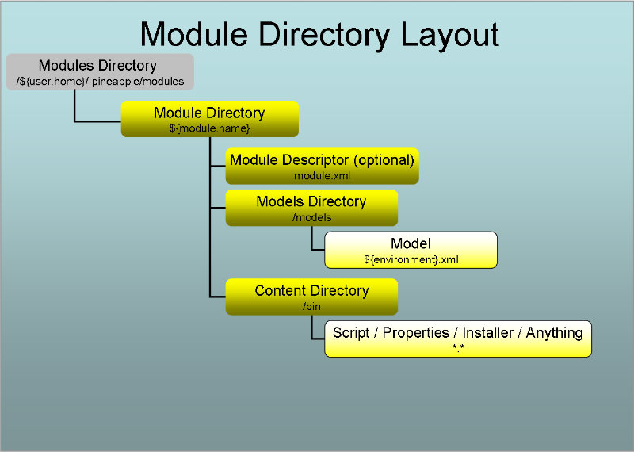

Introduction
Overview
Invoking the plugin
The plugin is invoked by the core component when the core component is used by one of the Pineapple clients. To trigger invocation by the core component the plugin needs to be configured.
Configuration
Three steps are needed to configure the plugin:
- Define resource: Define resource which enables usage of the the plugin. The resource enables usage by:
- Definition of connectivity information used by SSH to connect to the remote host modeled by the resource.
- Definition of a mapping between the resource ID (e.g. some user defined key referenced from models) and the plugin ID (e.g. the Java package name which implements the plugin: com.alpha.pineapple.plugin.ssh.
- Define credential: Define user name and password for the remote host in a credential. The security information in the credential is accessed from the resource and used for authentication when the remote host is accessed by the plugin.
- Define the module model and add content to the model by defining a list SSH command which is executed at the remote host(s) targeted by the defined resource(s). The SSH command in the model are executed in sequence when the plugin is invoked with the model. The model is defined using the The SSH plugin schema.
For more info about configuration of plugins:
- For info about resources and credentials read the Environment configuration document.
- For info about modules and module models read the Modules configuration document.
Execution of an operation
When the plugin is invoked with an operation (e.g. deploy-configuration) and a module model which defines a list of SSH commands the plugin will iterate over the list and execute them in sequence. The supported commands are:
- Execute shell command at remote host. A a single OS command or a shell script is execution at remote host.
- Secure file copy to host. A single file is copied from Pineapple to a remote host.
- Test equals. Extension of the execution shell command which executes a shell command or script and then validates whether the returned output from standard out is equal to the expected value.
- Test contains. Extension of the execution shell command which executes a shell command or script and then validates whether the returned output from standard out contains the expected value.
Define resource
The purpose of defining a resource for this plugin is twofold:
- Define a mapping between the resource ID and the plugin ID. The resource ID is the user defined key which is referenced from module models which are targeting the resource. The plugin ID is the Java package name which implements the plugin: com.alpha.pineapple.plugin.ssh.
- Define connectivity information used by the plugin to connect to the remote SSH daemon.
To define a new resource, add a resource element to the target environment in the configuration file ${pineapple.home.dir}/conf/resources.xml:
<?xml version="1.0" encoding="UTF-8"?>
<configuration xmlns="http://pineapple.dev.java.net/ns/environment_1_0"
xmlns:xsi="http://www.w3.org/2001/XMLSchema-instance">
<environments>
<environment id="local" >
<resources>
<resource id="vagrant-ssh" credential-id-ref="vagrant-ssh" plugin-id="com.alpha.pineapple.plugin.ssh" />
<property value="127.0.0.1" key="host"/>
<property value="2222" key="port"/>
<property value="1000" key="timeout"/>
</resource>
</resources>
</environment>
</environments>
</configuration>
The semantics of the resource element is:
The id attribute
Identifies the resource uniquely in the current environment. This ID is referenced from models which intends to use the plugin.
The credential-ref-id attribute
Id for the credential which is used to lookup user name and password for this resource.
Please notice: The plugin only support authentication using user/password. Authentication using a certificate isn't supported (yet).
Define credential
A credential defines authentication information used to access a protected resource. The remote host accessed by using SSH is protected by a user-id/password. So a credential needs to be defined.
The credentials.xml file
The credentials are by default defined in the file ${pineapple.home.dir}/conf/credentials.xml.
The credentials file is also defined using the environment configuration schema which defines the http://pineapple.dev.java.net/ns/environment_1_0 namespace. Since credential files only contain elements from a single namespace all the elements and attributes are unqualified. The header and root element should be defined as (look in the Environment configuration document for more details):
<?xml version="1.0" encoding="UTF-8"?> <configuration xmlns="http://pineapple.dev.java.net/ns/environment_1_0" xmlns:xsi="http://www.w3.org/2001/XMLSchema-instance" />
Credentials are grouped by environment
Credentials are grouped by environment the same way as resources are. If the required environment doesn't exists in the credential files, then define it, and add the credential to it.
Add a new environment sub element with the id linux-default to the environments element in the credential file:
<?xml version="1.0" encoding="UTF-8"?>
<configuration xmlns="http://pineapple.dev.java.net/ns/environment_1_0"
xmlns:xsi="http://www.w3.org/2001/XMLSchema-instance">
<environments>
<environment id="local" />
</environments>
</configuration>
Definition of the credential
Add a new credential to the environment:
<?xml version="1.0" encoding="UTF-8"?>
<configuration xmlns="http://pineapple.dev.java.net/ns/environment_1_0"
xmlns:xsi="http://www.w3.org/2001/XMLSchema-instance">
<environments>
<environment id="local">
<credentials>
<credential id="vagrant-ssh" user="vagrant" password="vagrant" />
</credentials>
</environment>
</environments>
</configuration>
The semantics of the credential elements is explained in the next sub sections:
The id attribute
Id of the credential in the current environment.
Notice: The example id vagrant-ssh is referenced from the resource example defined in the previous section.
Define the module model
A module defines the input used by Pineapple to execute operations. A module is defined by a directory layout. Part of a module is the model(s) which defines what happens when the module is invoked. A model is put together by one or more sub models from different plugins. Each plugin defines its own schema for its particular model
The SSH plugin schema
This plugin defines a schema named The SSH plugin schema which defines the http://pineapple.dev.java.net/ns/plugin/ssh_1_0 namespace. For more information about where the schema can be found, refer to the Schema locations for plugins page.
Name and location of the the module model file
The list of SSH commands (e.g. copy-from and execute) which should be executed when the plugin is invoked are defined in the module model files which are located at ${module-dir}/models/${environment}.xml where:
- ${module-dir} is the module root directory which identifies the module with a unique name and version.
- ${environment}.xml is a module model file for a target environment, with ${environment} substituted with the environment name, e.g. local.xml for an environment named local.
If the model file doesn't exist for an environment where the SSH commands should be run, then create the model file and name it after the target environment, e.g. local.xml for an environment named local.
The module model configuration schema
Module model files are defined using the module model configuration schema which defines the http://pineapple.dev.java.net/ns/module_model_1_0 namespace. Since module model files contain elements from multiple namespace all the elements and attributes should be qualified. The header and root element should be defined as (look in the Modules configuration document for more details):
This example shows definition of the minimal model file for local:
<?xml version="1.0" encoding="UTF-8"?> <mmd:models xmlns:xs="http://www.w3.org/2001/XMLSchema-instance" xmlns:mmd="http://pineapple.dev.java.net/ns/module_model_1_0" />
Adding the plugin schema to the model
The next step is to include the The SSH plugin schema to get access to the entities defined by the schema:
<?xml version="1.0" encoding="UTF-8"?> <mmd:models xmlns:xs="http://www.w3.org/2001/XMLSchema-instance" xmlns:mmd="http://pineapple.dev.java.net/ns/module_model_1_0" xmlns:shp="http://pineapple.dev.java.net/ns/plugin/ssh_1_0" />
Now we have a minimal module model file with three namespaces:
- xs: The basic XMLSchema schema which is only used in the root element of the document.
- mmd: The module model schema which is used to define the skeleton of a model file.
- shp: The SSH plugin schema which is used to define remote SSH commands.
Defining the model which targets resources
Add a new model with a target-resource attribute. The value of the target-resource should match the id of the resource which was defined previously in the section Define resource, e.g. vagrant-ssh:
<?xml version="1.0" encoding="UTF-8"?>
<mmd:models xmlns:xs="http://www.w3.org/2001/XMLSchema-instance"
xmlns:mmd="http://pineapple.dev.java.net/ns/module_model_1_0"
xmlns:shp="http://pineapple.dev.java.net/ns/plugin/ssh_1_0" />
<mmd:model target-resource="vagrant-ssh">
<mmd:content />
</mmd:model>
</mmd:models>
Add content to the model which uses the plugin through the vagrant-ssh reference:
<?xml version="1.0" encoding="UTF-8"?>
<mmd:models xmlns:xs="http://www.w3.org/2001/XMLSchema-instance"
xmlns:mmd="http://pineapple.dev.java.net/ns/module_model_1_0"
xmlns:shp="http://pineapple.dev.java.net/ns/plugin/ssh_1_0" />
<mmd:model target-resource="vagrant-ssh">
<mmd:content>
<shp:ssh>
</shp:ssh>
</mmd:content>
</mmd:model>
</mmd:models>
Define SSH commands in the module model
Define a sequence of SSH commands which should be executed when Pineapple is invoked with the model:
<?xml version="1.0" encoding="UTF-8"?>
<mmd:models xmlns:xs="http://www.w3.org/2001/XMLSchema-instance"
xmlns:mmd="http://pineapple.dev.java.net/ns/module_model_1_0"
xmlns:shp="http://pineapple.dev.java.net/ns/plugin/ssh_1_0" />
<mmd:model target-resource="vagrant-ssh">
<mmd:content>
<shp:ssh>
<shp:copy-to source="modulepath:bin/apt.conf" destination="/tmp/apt.conf"/>
<shp:execute command="sudo cp /tmp/apt.conf /etc/apt/apt.conf.d/99my-apt-conf" />
<shp:execute command="sudo apt-get install unzip" />
<shp:execute command="sudo apt-get install chkconfig" />
<!-- total memory -->
<shp:assert-contains command="grep MemTotal /proc/meminfo" expected-value="132154992" />
<!-- kernel swappiness -->
<shp:assert-equals command="cat /proc/sys/vm/swappiness" expected-value="0" />
</shp:ssh>
</mmd:content>
</mmd:model>
</mmd:models>
copy-to command
The copy-to command copies a single file from the node where Pineapple is running to a remote host defined in the targeted resource.
The source attribute defines the path on the Pineapple node where the source file canbe found. The command support the usage of the modulepath: prefix in the source attribute which is resolved to the absolute directory where the model is defined.
The destination attribute defines the path on the remote host accessed with SSH where the file should be copied.
The optional chmod attribute defines the file permissions for the remote file. The value is the octal representation of OGW (e.g. owner, group and world).
The optional chown attribute defines the user ownership of the remote file. The value is the identifier (UID) of the new owner.
The optional chgrp attribute defines the the group ownership of the remote file. The value is the identifier (UID) of the new owner.
The optional substitute-variables boolean attribute defines if variable substitution should be peformed on the source file prior to copying it to the remote host. If enabled then Pineapple will validate that the file exists and that it isn't larger than 1 MB which is the default maximum size for files processed in this manner. The restriction is imposed to avoid processing large binary files by accident. The default value is true, e.g. variable substitution is enabled by default.
execute command
The execute command execute a single shell command on the remote host defined in the targeted resource.
The command attribute defines the shell command or script to execute. The output of the command in the form of standard out, error out and the shell return code are reported back.
assert-contains command
The assert-contains command execute a single shell command on the remote host defined in the targeted resource. The returned output in standard out is then asserted with an expected value. If the output contains the expected value then the test succeeds.
The command attribute defines the shell command or script to execute. The output of the command in the form of standard out, error out and the shell return code are reported back.
The expected-value attribute defines the expected value which must be present in the returned standard out output for the test to succeed.
assert-equals command
The assert-equals command execute a single shell command on the remote host defined in the targeted resource. The returned output in standard out is then asserted with an expected value. If the output is equal (e.g. a string comparison) to the expected value then the command succeeds.
The command attribute defines the shell command or script to execute. The output of the command in the form of standard out, error out and the shell return code are reported back.
The expected-value attribute defines the expected value which must be equal to the returned standard out output for the test to succeed.